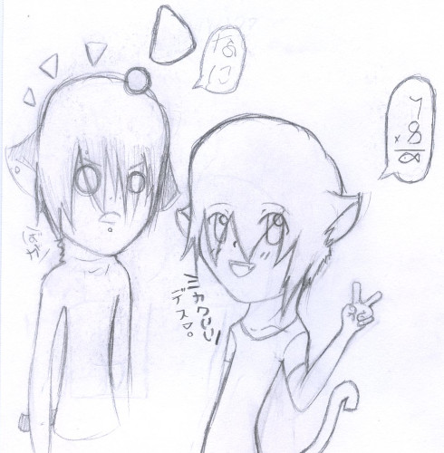
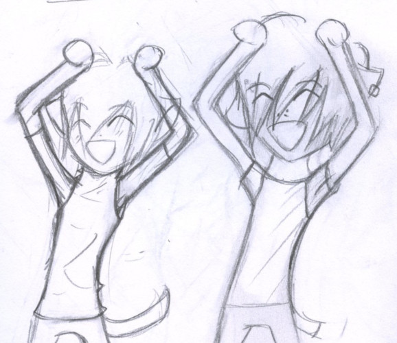
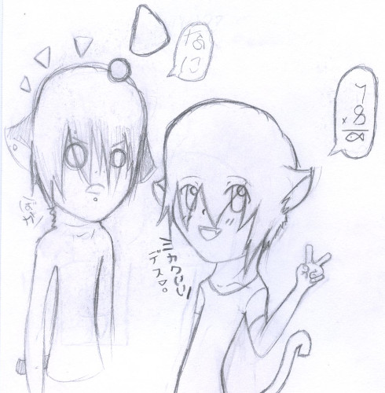
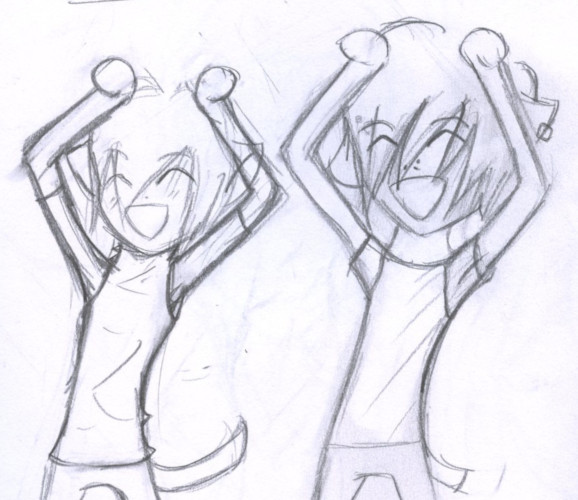
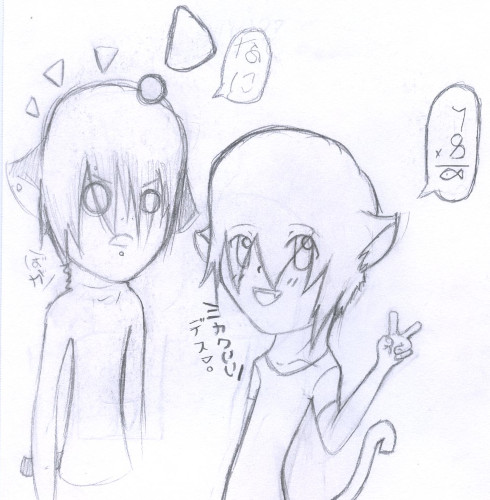
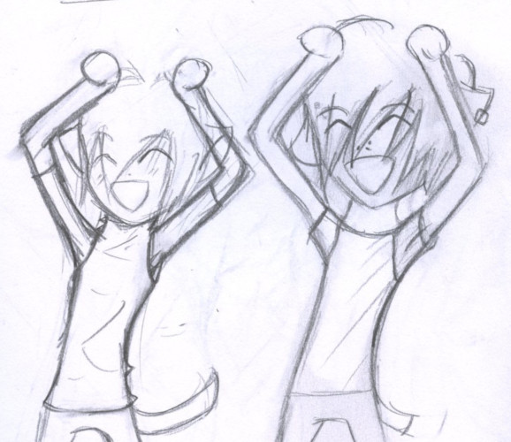

Please enjoy this deep dive into middle and high school. I had a wild time looking through my files to collect this information. 10/10, would draw gay anime boys again.
I must have flipped through a dictionary with my eyes closed to pick these names. These two were 8th grade boys who fell in love with each other on the last day of class.
Continue had a 空 tattoo on his cheek. From had bleached bangs (like myself at the time) and otherwise dark hair.
In 7th grade, I drew these two together (shirtless as usual) and gave it to a friend. I marked it as very important to not open around others! Of course, she showed it to a friend and that friend's parents. Never trust a 7th grader.
I must have flipped through a French for Dummies book to choose these names. I can in all honesty say I had/have no idea how to pronounce Fraise. I have been calling him Fries the entire time I wrote this page. The boys had become catboys.


Soleil was aged up to 15. He had become covered in tattoos and piercings, but somehow the sora disappeared. His hair and ears were black and he was very tall for his age. His personality was consistently annoyed and in a bad mood. There's a short comic of him snapping at Fraise.
Fraise was described as very pale with white hair and bright blue eyes. It was supposed to signify his innocence, and he was very innocent and immature!! He was 14, but looked and acted younger. Fraise's tail was at least twice as long as Soleil's.
The scenario was different this time. Fraise was literally Soleil's pet that had been given to him as a birthday gift. Soleil comes from a very rich family and lives in a mansion with limos and butlers and the whole 9 yards. Despite his bad attitude, Soleil has a soft spot for his pet and babies him.
These two lost their ears and tails and went back to being totally human. There's some drawings from during this transition before Liam became hirable.
Verona had gotten his name changed first. He's now 19, 5'9", 150 lbs. He has a french accent that he's frustrated with. His job is DJ (read: unemployed). His skin tone was still pale in this profile, but his hair is light brown now.
Verona is now tan because I had limited doll FOMO. There is absolutely no good reason for him for him not to be stark white other than his doll is more important to me than his character.
Liam's name change came around the time I bought Migidoll Ryu. In a wishlist written in May 2009 (before the purchase of Verona and Liam dolls), Migidoll Ryu was still Soleil.
Verona has always been my cute genki boy through all the variations. He was definitely my favorite to draw of the two through the years.
I had decided I needed to cause my favorite genki boy pain, so I decided to kill off Soleil/Liam. Verona is nonfunctional without him. I have the power to reverse time and stop this! I'm sorry for being so cruel to my boy!! ;___________;
He leaves for America and moves in with Rio. I'm starting to think Liam may not have been American like I thought. Verona's hair is black and long after this. Not much explanation was provided.
I have a clear preference for Verona time, based of the sheer mass of drawing I have of him alone. It has interestingly swapped since then.
I was panicking when I noticed how cute Liam and Hina are together. Liam will always belong with Verona so I've had to come up with 50 explanations as to why he's with Hina. It's only temporary and no cheating is involved.
There were plans to create second shells of these boys as mature minis. I had plans to modify a Limhwa Limho Mono to look more like Ryu and AL Unoa L-bi was going to be the perfect fit for Verona. The plans did not make it out of Photoshop.
The name Aries was considered for Rio. This character was created for the doll.
Rio is an angel of the lowest rank sent to Earth. He's 17, 6'10" and 196 lbs. He's homeless and jobless. He speaks Latin and is not great at English.
Rio is heartless and self centered. He's rude and impatient, but wants to be adored and admired. He is very beautiful, which works for him until others get to know him.
Rio is involved with a female angel named Nisse who never made it to doll form.
I didn't put a lot into creating Sasha. This character was also created for the doll. In one profile, he's a 17 year old angel. He has the ability use his powers on Earth, which specifically include levitation. Cheby can still levitate in current day, but it's due to his incel powers.
A fiction snippet describes him shaking and crying in his sleep. Rio explains that he is able to see the future in his dreams.
There was an OC with the name Bridge that I'm a little surprised that I did not find plans to make a doll for. I do see a lot of his design in the Bobobie Espree boy I owned once.


The Liam Verona Hina love triangle situation is out of control. What have I done. Wish them luck...